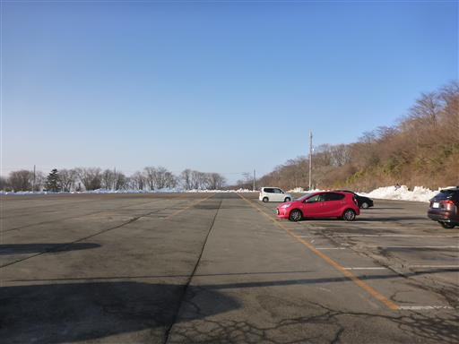
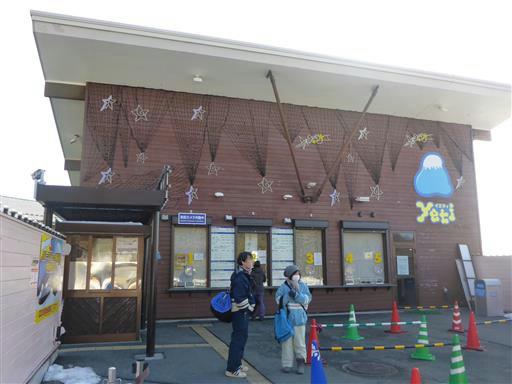
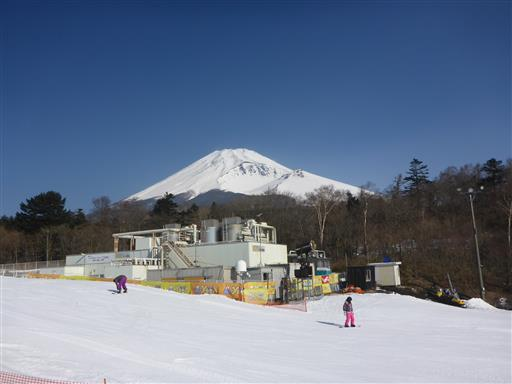
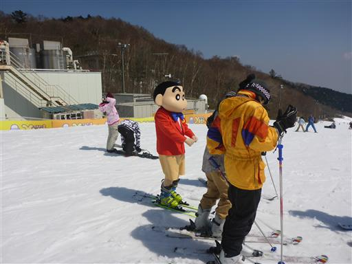
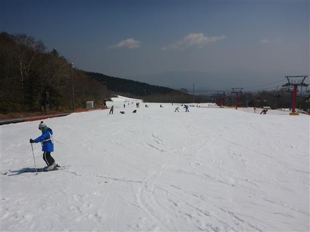
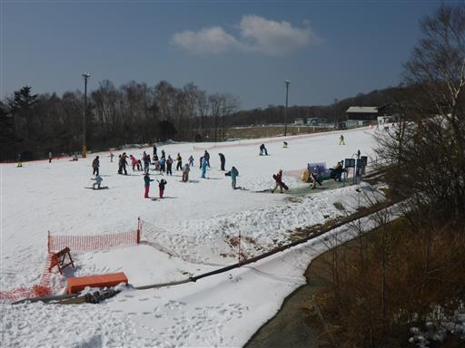
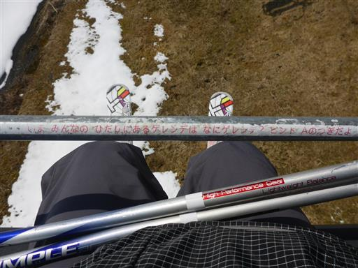

スノータウンYeti
| 日付 | 2017年3月20日（月） |
|---|---|
| メンバー | 単独 |
| アクセス | 車 |
再び日帰りで一人スキーの練習をしに行く。
3連休の最終日で帰りの高速が混むのが嫌なので、
中央、関越を避けて東名で行ける唯一のスキー場・スノータウンYetiにする。
富士山が望める展望の良いスキー場だ。
駐車場に到着。朝早いため、まだ車はほとんど止まっていない。

オープンの時間にならないと中に入れない作りになっている。
更衣室は中にあるため、事前に着替えておくという事ができない。
仕方がないので車で着替えたが、少々作りが悪いように思う。

オープンと同時に入場。白く輝く富士山が美しい。

もう3月末だからか、結構空いている。これだけ空いていると滑りやすい。
リフトは4人乗り。安全のために乗ったらバーを下ろさないといけないのだが、
ずっと手で押さえておく必要があり、かなり面倒だ。

なぜかクレヨンしんちゃんがいる。
子供集客用にいるようで、多くの人が並んで記念撮影をしている。

スキー場は緩やかな斜面が多く非常に滑りやすい。
午後になると雪が解けて滑りにくくなったが、
凍っていたカムイみさかスキー場よりコンディションが良い。

昼近くになると少し人が増えてくる。今回も中級者の団体レッスンを申し込む。
ラッキーなことに他に参加者がおらず、マンツーマンで指導してもらうことができた。

午後になって人が増えてきたら、クアッドリフトの隣にあるペアリフトも動き出す。
リフトにはなぞなぞが書かれていて、子供が楽しめるようになっている。
しかしペアリフトは信じられないくらいに進むのが遅く、2度と乗らなかった。

夕方になると一部のコースが閉鎖されて整備が始まる。
ここのスキー場はナイターもやっているが、帰るのが遅くなるため、ほどほどで切り上げる。
今回は緩斜面でパラレルターンの練習ができ、上達を感じられた一日だった。
帰りはまさかの東名大渋滞にはまってしまい、かなり時間がかかってしまう。
中央、関越のほうがましだった…